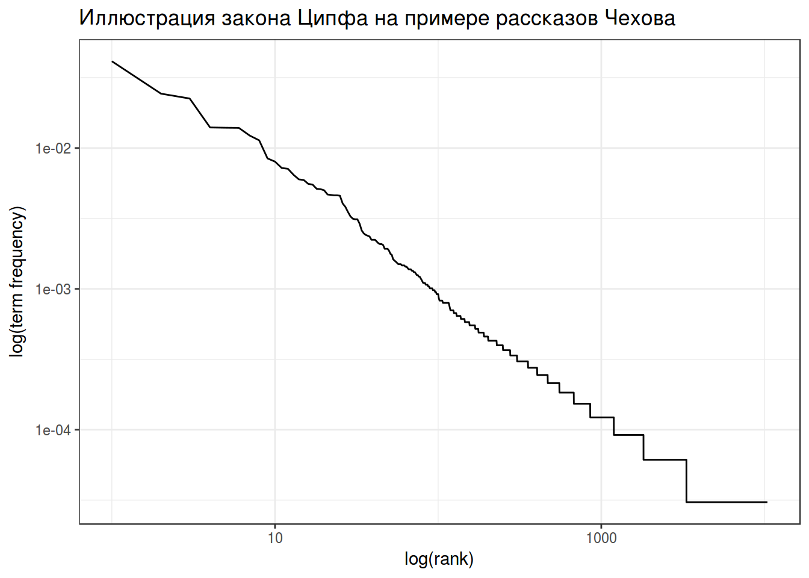
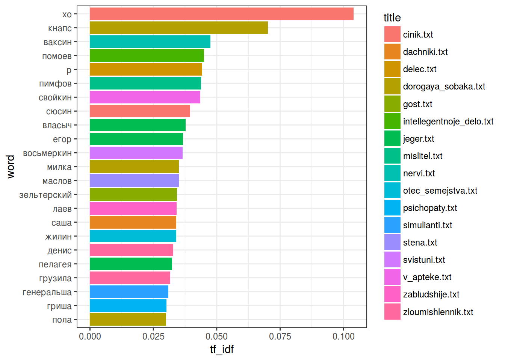

“Интересно, кто же это такой Слонопотам?”– подумал Пух.
– Их не часто встретишь,– небрежно сказал Кристофер Робин.(А. А. Милн)
Начнем с того, что скачаем датасет, с которым мы будем работать.
temp <- tempfile() # создаем временный файл
path <- "./docs/materials/Chekhov/"
download.file("https://goo.gl/9DWBF5", destfile = temp) # скачиваем в него архив
unzip(temp, exdir = path) # создаем папку Chekhov и распаковываем туда
rm(temp) # удаляем временный файл
list.files(path = path) # смотрим на список распокованных файлов## [1] "cinik.txt"
## [2] "dachniki.txt"
## [3] "delec.txt"
## [4] "dorogaya_sobaka.txt"
## [5] "gost.txt"
## [6] "intellegentnoje_delo.txt"
## [7] "jeger.txt"
## [8] "mertvoje_telo.txt"
## [9] "mislitel.txt"
## [10] "moi_jeni.txt"
## [11] "nalim.txt"
## [12] "nervi.txt"
## [13] "ne_sudba.txt"
## [14] "ninochka.txt"
## [15] "obshee_obrazovaniye.txt"
## [16] "otec_semejstva.txt"
## [17] "psichopaty.txt"
## [18] "rukovodstvo_dlya_zhelayushich_zhenica.txt"
## [19] "rybje_delo.txt"
## [20] "sapogi.txt"
## [21] "simulianti.txt"
## [22] "starosta.txt"
## [23] "stena.txt"
## [24] "straji_pod_strajey.txt"
## [25] "svistuni.txt"
## [26] "utoplennik.txt"
## [27] "v_apteke.txt"
## [28] "zabludshije.txt"
## [29] "zhenich_i_papenka.txt"
## [30] "zloumishlennik.txt"Это 30 маленьких рассказов А. П. Чехова. Давайте все их считаем:
files <- list.files(path = path) # создадим переменную со списком файлов
texts <- lapply(paste0(path, files), FUN=readLines) # считаем все файлы в одну переменнуюtidytextОбычная философия tidy data: одна строчка – одно наблюдение; один столбец – одна переменная. Попробуем tidyфицировать один текст:
library(tidyverse); library(tidytext); library(stringr)
text_df <- data_frame(line = seq_along(texts[[1]]),
text = texts[[1]])
head(text_df)text_df %>%
unnest_tokens(word, text) ->
tidy_df
head(tidy_df)Чтобы избежать изменения размера шрифта нужно использовать аргумент to_lower = FALSE
text_df %>%
unnest_tokens(word, text, to_lower = FALSE) ->
tidy_df
head(tidy_df)На следующем шаге хотелось бы создать датафрейм со всем произведениями, которые мы рассматриваем.
texts <- lapply(seq_along(texts), function(x){
data_frame(title = files[[x]],
sentences = seq_along(texts[[x]]),
text = texts[[x]])
})
all_texts <- Reduce(function(x,y){merge(x,y, all = TRUE)}, texts)
all_texts %>%
unnest_tokens(word, text) ->
tidy_chekhov
head(tidy_chekhov)Закон Хердана-Хипса (Herdan-Heaps’ law) – имперический закон, согласно которому количество уникальных слов в тексте зависит от длины текста.
\[V(n) = K\times n ^{β}\]
tidy_chekhov %>%
group_by(title) %>%
summarise(n_words = n(),
n_unique = length(unique(word))) ->
heaps
heaps %>%
ggplot(aes(n_words, n_unique))+
geom_point()+
theme_bw()+
labs(title = "Иллюстрация закона Хердана-Хипса на примере рассказов Чехова",
x = "количество слов",
y = "количество уникальных слов")fit <- summary(lm(n_unique~sqrt(n_words)-1, data = heaps))
fit$coefficients## Estimate Std. Error t value Pr(>|t|)
## sqrt(n_words) 19.12088 0.4248343 45.00785 2.186672e-28fit$adj.r.squared## [1] 0.9853994Закон Ципфа (Zipf’s law) – имперический закон, согласно которому частотность слова обратно пропорционально его рангу.
\[freq(r) = A \times N \times r^{-1}\]
tidy_chekhov %>%
group_by(word) %>%
summarise(term_frequency = n()/nrow(tidy_chekhov)) %>%
arrange(desc(term_frequency)) %>%
mutate(rank = row_number()) -> zipf
head(zipf)zipf %>%
ggplot(aes(rank, term_frequency))+
geom_line()+
scale_x_log10() +
scale_y_log10() +
labs(title = "Иллюстрация закона Хердана-Хипса на примере рассказов Чехова",
y = "log(term frequency)",
x= "log(rank)")+
theme_bw()
Чтобы начать анализировать текст нужно удалить “служебные” слова, которые часто встречаются в тексте, но не очень приближают к его пониманию. Такие списки для английского языка встроены в пакет tidytext (см. data(stop_words)). Для русского языка, конечно, ничего не встроено, но подобные списки легко гуглятся (я буду использовать этот).
ОБЯЗАТЕЛЬНО: проверьте используется ли буква ё в ваших данных и в вашем списке стоп слов.
str_detect(tidy_chekhov, "ё")## [1] FALSE FALSE TRUEru_stop_words <- read.csv("https://goo.gl/pfpUrB", header = FALSE)
str_detect(ru_stop_words, "ё")## [1] FALSEtidy_chekhov$word <- str_replace_all(tidy_chekhov$word, "ё", "е")
tidy_chekhov %>%
filter(!word %in% ru_stop_words$V1) %>%
filter(str_detect(title, "moi_jeni.txt|nalim.txt|jeger.txt")) %>%
count(title, word, sort = TRUE) %>%
filter(n > 3) %>%
ggplot(aes(word, n))+
coord_flip()+
geom_bar(stat= "identity")+
facet_wrap(~title, scale = "free")+
theme_bw()tidy_chekhov %>%
count(title, word)%>%
arrange(desc(n))->
tidy_chekhov_n
head(tidy_chekhov_n)tidy_chekhov_n %>%
group_by(title) %>%
summarise(sum(n)) %>%
left_join(tidy_chekhov_n) ->
tidy_chekhov## Joining, by = "title"head(tidy_chekhov)tidy_chekhov %>%
bind_tf_idf(word, title, n) ->
tidy_chekhov_tf_idf
head(tidy_chekhov_tf_idf)tidy_chekhov_tf_idf %>%
filter(tf_idf > 0.03) %>% # число подобрано по данным
ggplot(aes(word, tf_idf, fill = title))+
coord_flip()+
geom_bar(stat= "identity")+
theme_bw()
library(ggfortify)
gospels <- read.csv("https://goo.gl/mdBVVe")
head(gospels)row.names(gospels) <- gospels$word
PCA <- prcomp(gospels[,2:5])
autoplot(PCA,
shape = FALSE,
loadings = TRUE,
label = TRUE,
loadings.label = TRUE)+
theme_bw()summary(PCA)## Importance of components%s:
## PC1 PC2 PC3 PC4
## Standard deviation 0.003482 0.001599 0.0008725 0.0007001
## Proportion of Variance 0.761020 0.160420 0.0477900 0.0307700
## Cumulative Proportion 0.761020 0.921440 0.9692300 1.0000000У функции unnest_tokens() есть аргумент token, значение которого по умолчанию "words". Попробуйте использовать значение "characters" и определить будет ли соблюдаться закон Ципфа для отдельных символов.
Я использовал один из рисунков Эрнеста Говарда Шепарда к Винни-Пуху.↩